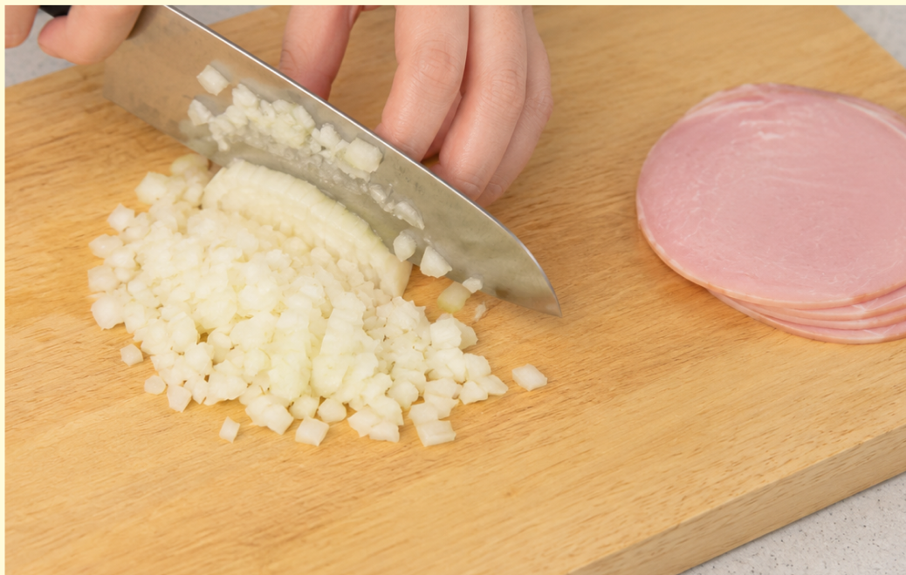
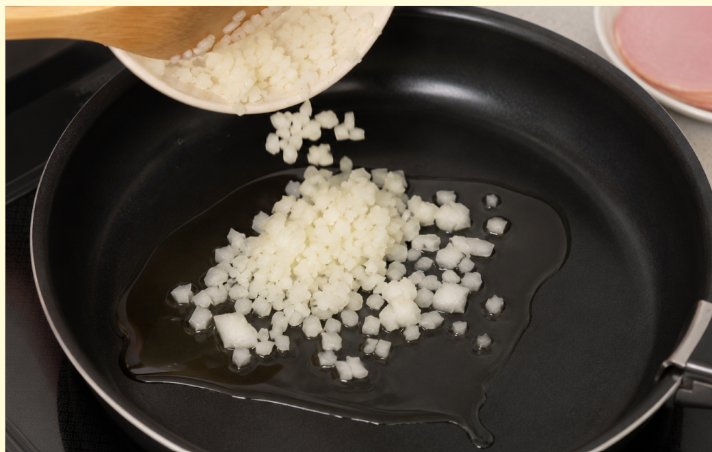
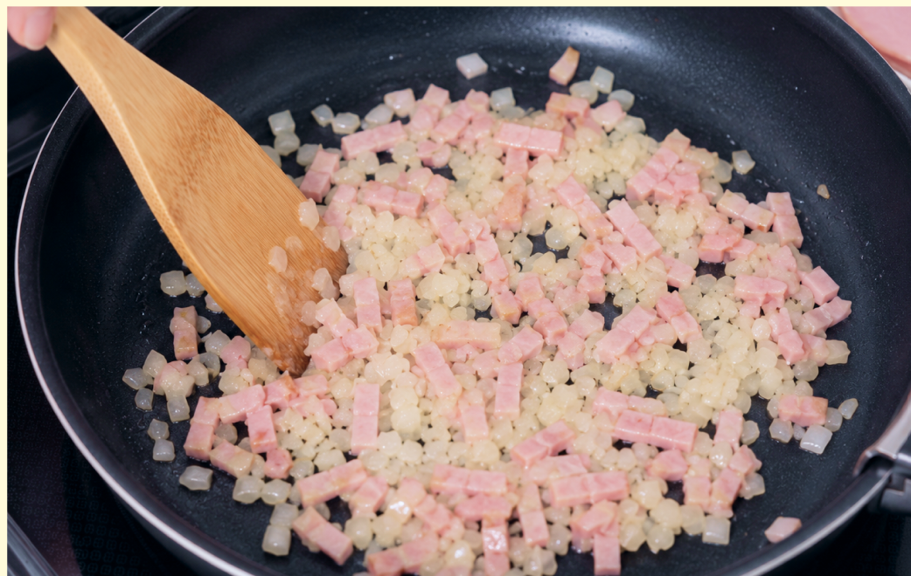
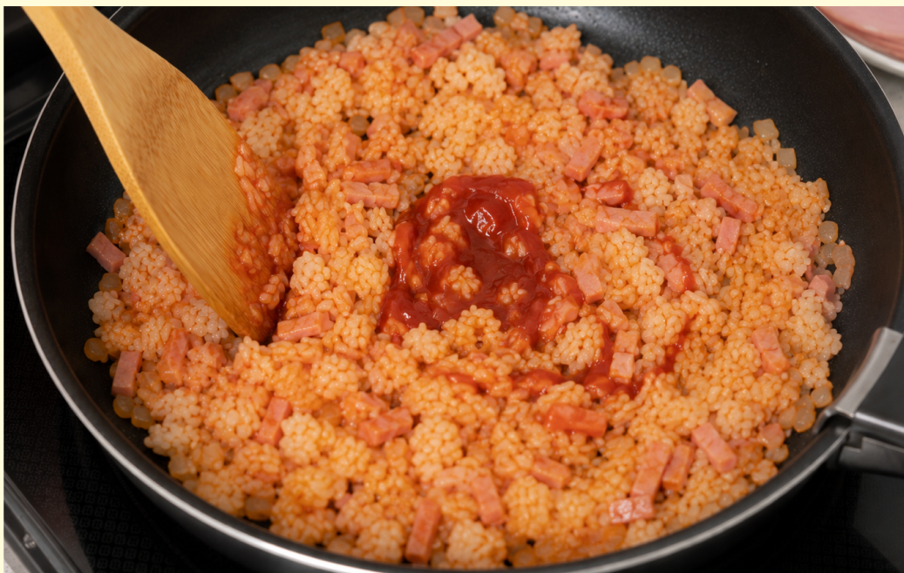
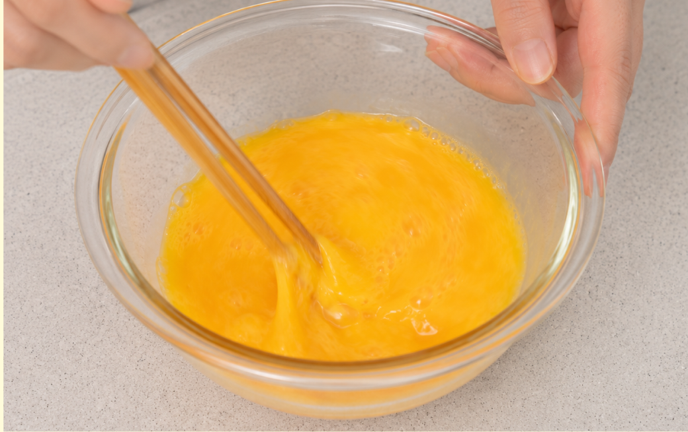
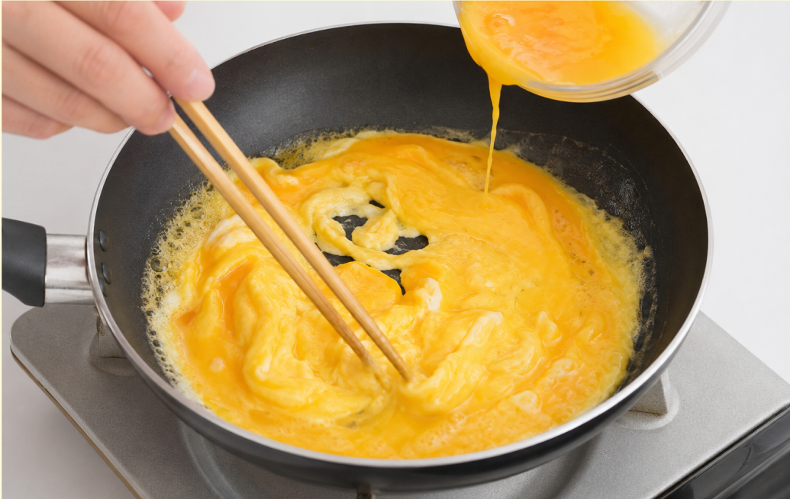
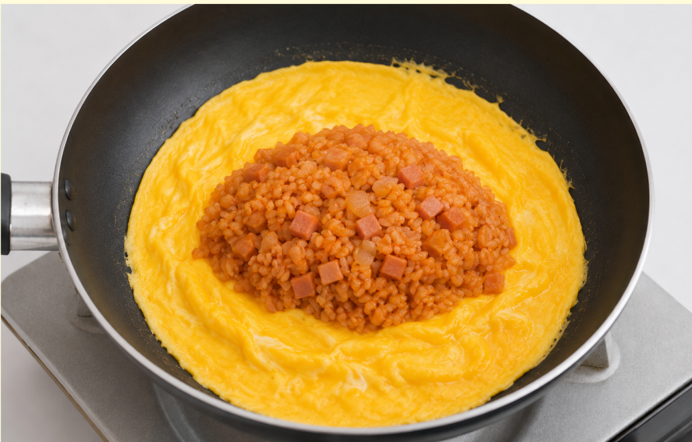
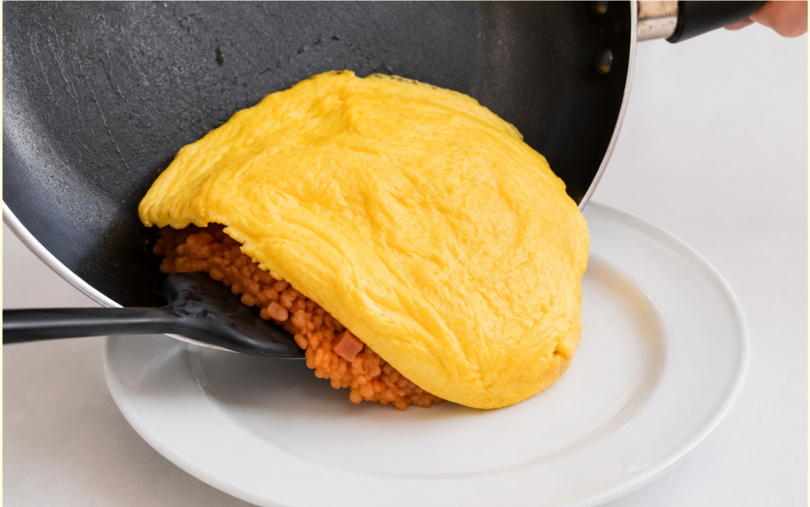

材料（一人分）
- ・ご飯茶碗1杯分
- ・卵2個
- ・鶏肉またはハム50g
- ・玉ねぎ1/4個
- ・サラダ油小さじ1
- ・バター5g
- ・ケチャップ大さじ2
- ・塩こしょう少々
必要な道具
- ・フライパン
- ・ボウル
- ・包丁
- ・まな板
- ・菜箸
- ・フライ返し
- ・お皿
注目ポイント
- 🔥 火加減に注意
- 🍳 しっかり加熱
- 💡 アレンジしても◎
作り方
① 玉ねぎはみじん切りにします。 豚肉やハムは小さめの角切りにします。

② フライパンにサラダ油を入れて中火で熱します。 玉ねぎを入れて、しんなりするまで炒めます。

③ しんなりしてきたら、 鶏肉またはハムを加えて火を通します。 鶏肉を使用する場合は、中までしっかり火が通っているか確認しましょう。

④ ご飯とケチャップを加えてほぐしながら炒めます。 塩・こしょうで味を調え、 味がうまくなったら完成したケチャップライスをお皿にのせます。

⑤ ボウルに卵を割り入れ、 箸でよく混ぜます。

⑥ フライパンにバターを入れて、 弱めの中火で溶かします。 フライパンが温まったら溶き卵を流し入れ、 菜箸で大きく混ぜながら半熟状にします。

⑦ 卵が半熟になったら、 中央にケチャップライスをのせます。 フライ返しなどを使って、 卵をかぶせるように包みます。

⑧ フライパンを傾けて、 お皿にそっと移します。 形を整え、上からケチャップをかけたら完成です。 ケチャップの代わりにデミグラスソースや ホワイトソースをかけてもおいしく食べられます。

調理のコツ
フライパンが温まる前に
卵を入れると、
フライパンにくっつきやすくなります。
バターがしっかり溶けてから
卵を入れましょう。
もっと美味しく
ケチャップライスの
ケチャップを最後に入れると、
酸味を強く感じることがあります。
ケチャップを少し炒めると、
香ばしさが出て味がなじみやすくなります。